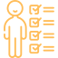

หลักสูตรระดับปริญญาตรี
.png) ชื่อหลักสูตร
ชื่อหลักสูตร
ภาษาไทยวิทยาศาสตรบัณฑิต : สาขาวิชาวิทยาการคอมพิวเตอร์
ภาษาอังกฤษ : Bachelor of Science Program in Computer Science
ชื่อปริญญา
ภาษาไทยวิทยาศาสตรบัณฑิต : (วิทยาการคอมพิวเตอร์) วท.บ. (วิทยาการคอมพิวเตอร์)
ภาษาอังกฤษ : Bachelor of Science (Computer Science) B.Sc.(Computer Science)
หน่วยงานที่รับผิดชอบ
ภาควิชาวิทยาการคอมพิวเตอร์คณะวิทยาศาสตร์มหาวิทยาลัยขอนแก่น
หลักการและเหตุผล
ปัจจุบันโลกมีการพัฒนาเปลี่ยนแปลงและวิวัฒนาการทางด้านเทคโนโลยีอย่างรวดเร็ว องค์กรต่างๆ มีการนำเทคโนโลยีคอมพิวเตอร์และระบบสารนเทศต่างๆ เข้ามาใช้งานอย่างกว้างขวางมากขึ้นเพื่อสนับสนุนการปฏิบัติการในองค์กร รวมถึงการสกัดองค์ความรู้ต่างๆจากระบบสารสนเทศที่มีอยู่มาช่วยในการตัดสินใจในองค์กร สำหรับประเทศไทยได้มีการจัดทำแผนแม่บทเทคโนโลยีและการสื่อสารฉบับที่ 1 ระหว่างปี 2545 - 2549 และแผนแม่บทฉบับที่ 2 ระหว่างปี พ.ศ. 2550 – 2554 ได้มีการกำหนดยุทธศาสตร์การนำ ICT มาใช้ในการบริหารภาครัฐ และเอกชน สร้างมาตรฐานการวิจัย ที่มีศักยภาพต่อการพัฒนาประเทศ มุ่งเป็นองค์กรที่มีบุคลากรที่มีความพร้อมความสามารถ พัฒนาด้าน IT ให้อยู่ในกลุ่มประเทศที่มีศักยภาพในการเป็นผู้นำ มีการลงทุนในการพัฒนาทักษะกำลังคน ซึ่งนำไปสู่ความต้องการกำลังคนที่มีความสามารถในการดำเนินด้านวิทยาการคอมพิวเตอร์และสารสนเทศเพื่อสนับสนุนการดำเนินการดังกล่าว สำหรับมหาวิทยาลัยขอนแก่น มีหน้าที่และความรับผิดชอบในการดำเนินการจัดการศึกษาระดับอุดมศึกษา กำหนดนโยบายและจัดทำแผนการพัฒนามหาวิทยาลัยให้สอดคล้องกับนโยบายและแผนการพัฒนาประเทศ ในส่วนของภาควิชาวิทยาการคอมพิวเตอร์มีบุคลากรที่มีความรู้ความเชี่ยวชาญด้านวิทยาการคอมพิวเตอร์, เทคโนโลยีสารสนเทศและภูมิสารสนเทศศาสตร์ ที่พร้อมจะส่งเสริมและผลิตบัณฑิต ให้สอดคล้องกับภารกิจของภาควิชาวิทยาการคอมพิวเตอร์ ในการจัดการเรียนการสอนทั้งในระดับปริญญาตรี โท และระดับปริญญาเอก เพื่อผลิตบัณฑิตให้มีความรอบรู้วิชาการทั้งภาคทฤษฎี และภาคปฏิบัติ มีความสามารถในการใช้คอมพิวเตอร์และเทคโนโลยีสารสนเทศ มีความรู้ภาษาอังกฤษในระดับสื่อสาร มีความสามารถในการคิดและวิเคราะห์อย่างเป็นระบบ มีคุณธรรม จริยธรรม และรับผิดชอบต่อสังคม สอดคล้องกับความต้องการบุคลากรทางด้านวิทยาการคอมพิวเตอร์ ทั้งภาครัฐและเอกชน
ปรัชญา
หลักสูตรวิทยาศาสตรบัณฑิต สาขาวิชาวิทยาการคอมพิวเตอร์ เป็นหลักสูตรที่มุ่งหวังจะผลิตบัณฑิตที่มีความรู้ความสามารถทางด้านวิทยาการคอมพิวเตอร์ทั้งภาคทฤษฎีและภาคปฎิบัติ มีทักษะทางด้านคอมพิวเตอร์ตามความสนใจและศักยภาพส่วนบุคคล มีความสามารถในการคิดและวิเคราะห์ได้อย่างเป็นระบบ มีความคิดริเริ่มสร้างสรรค์ มีความสามารถทางวิชาการ มีความสนใจใฝ่หาความรู้ ศึกษาตลอดชีวิต สามารถนำความรู้ไปประยุกต์ใช้ได้อย่างเหมาะสม สามารถทำงานร่วมกับผู้อื่นได้ดี มีความรับผิดชอบต่อสังคม มีจิตสำนึกในคุณธรรม จริยธรรมและจรรยาบรรณ
วัตถุประสงค์ของหลักสูตร
หลักสูตรวิทยาศาสตรบัณฑิต สาขาวิชาวิทยาการคอมพิวเตอร์ ฉบับเดิมเริ่มใช้เมื่อปี พ.ศ. 2536 ความจำเป็นต้องปรับปรุงใหม่ให้สอดคล้องกับความก้าวหน้าของวิทยาการด้านคอมพิวเตอร์ โดยมีวัตถุประสงค์ของหลักสูตร ดังนี้ เพื่อผลิตบัณฑิตระดับปริญญาตรี สาขาวิชาวิทยาการคอมพิวเตอร์ให้มีความรู้ ความสามารถในการประกอบวิชาชีพด้านคอมพิวเตอร์และมีความพร้อมในด้านต่าง ๆ คือมีความคิดริเริ่ม สร้างสรรค์ สามารถติดตามความก้าวหน้าทางวิชาการอย่างต่อเนื่องมีความสำนึกใหม่ในหน้าที่รับผิดชอบต่อตนเองและสังคม มีมนุษยสัมพันธ์ที่ดี สามารถทำงานเป็นกลุ่มได้อย่างมีประสิทธิภาพมีทัศนคติที่ดีต่อวิชาชีพ มีคุณธรรมและจรรยาบรรณ
จุดเด่นหรือจุดแข็งของหลักสูตร
หลักสูตรวิทยาศาสตรบัณฑิต สาขาวิชาวิทยาการคอมพิวเตอร์ เป็นหลักสูตรที่สอดคล้องกับการใช้ชีวิตประจำวันของทุกคนในยุคปัจจุบัน ซึ่งเป็นยุคโลกาภิวัตน์หรือโลกไร้พรมแดนและมีการติดต่อสื่อสารข้อมูลผ่านระบบเครือข่ายโลก โดยทุกหน่วยงานทั้งภาครัฐและเอกชนจะเน้นการนำคอมพิวเตอร์และเทคโนโลยีสารสนเทศเข้ามาใช้งาน หลักสูตรนี้ยังเน้นการผลิตนักศึกษาในตำแหน่งงานที่ตลาดแรงงานต้องการเป็นจำนวนมาก ได้แก่ โปรแกรมเมอร์ นักวิเคราะห์ระบบ ผู้ดูแลระบบเครือข่าย นักวิศวกรซอฟต์แวร์ ผู้บริหารโครงการซอฟต์แวร์ นักวิจัย บุคลากรด้าน Graphics Multimedia และส่วนมากบัณฑิตที่สำเร็จการศึกษาหลักสูตรฯ นี้ มีงานทำ 100% และได้รับเงินเดือนสูงกว่าสาขาวิชาอื่น นอกจากนี้หลักสูตรยังให้ความสำคัญกับแนวคิดทางปรัชญา ซึ่งจะทำให้นักศึกษามีความคิดและวิเคราะห์ได้อย่างเป็นระบบ มีความสามารถทางวิชาการ มีความรับผิดชอบต่อสังคม มีจิตสำนึกในคุณธรรม จริยธรรมและจรรยาบรรณ
กำหนดการเปิดสอน
จะเปิดดำเนินการเรียนการสอนหลักสูตรนี้ ตั้งแต่ภาคการศึกษาต้น ปีการศึกษา 2555 เป็นต้นไป
คุณสมบัติของผู้เข้าศึกษา
คุณสมบัติของผู้เข้าศึกษา
การคัดเลือกผู้เข้าศึกษา
ให้เป็นไปตามระเบียบมหาวิทยาลัยขอนแก่น ว่าด้วยการศึกษาขั้นปริญญาตรี พ.ศ. 2548 หมวดที่ 2 ข้อ 8 หรือเป็นไปตามระเบียบมหาวิทยาลัยขอนแก่นที่ปรับปรุงใหม่
จำนวนที่รับเข้า
ทั้งหมด 80 คน
วิชาที่สอบ
| วิชา | สัดส่วนคะแนน |
|---|---|
| ภาษาอังกฤษ | 30 |
| คณิตศาสตร์ 1 | 30 |
| เคมี | 25 |
| ฟิสิกส์ | 15 |
| รวม | 100 |
นักศึกษาจะต้องมีจำนวนหน่วยกิตรวมตลอดหลักสูตร ไม่น้อยกว่า 137 หน่วยกิต นักศึกษาที่จะสำเร็จการศึกษาได้จะต้องผ่านวิชาสหกิจศึกษาหรือวิชาโครงงานคอมพิวเตอร์ และผ่านการฝึกงาน
| หมวดวิชาศึกษาทั่วไป | 30 หน่วยกิต | |
|---|---|---|
| - กลุ่มวิชาภาษา | 12 หน่วยกิต | |
| - กลุ่มวิชามนุษยศาสตร์และสังคมศาสตร์ | 3 หน่วยกิต | |
| - กลุ่มวิชาวิทยาศาสตร์และคณิตศาสตร์ | 15 หน่วยกิต | |
| หมวดวิชาเฉพาะ | 101 หน่วยกิต | |
| - กลุ่มวิชาพื้นฐานวิชาชีพ | 28 หน่วยกิต | |
| - กลุ่มวิชาบังคับ | 52 หน่วยกิต | |
| 1.กลุ่มวิชาชีพ | 46 หน่วยกิต | |
| 2.กลุ่มวิชาฝึกงานและสหกิจศึกษา | 6 หน่วยกิต | |
| - กลุ่มวิชาเลือก | 21 หน่วยกิต | |
| หมวดวิชาเลือกเสรี | ไม่น้อยกว่า | 6 หน่วยกิต |
| รวมทั้งหมด | 137 หน่วยกิต |
Last modified on วันพุธ, 07 สิงหาคม 2562 08:28